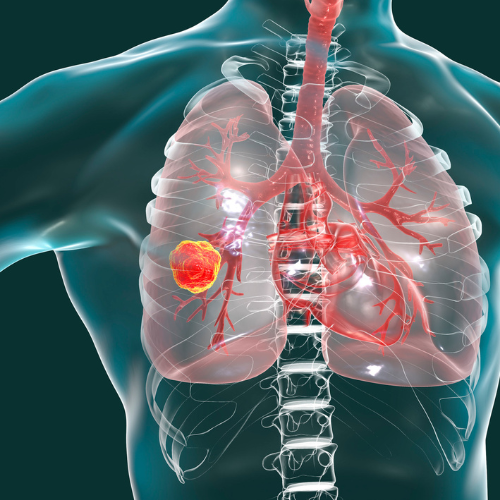
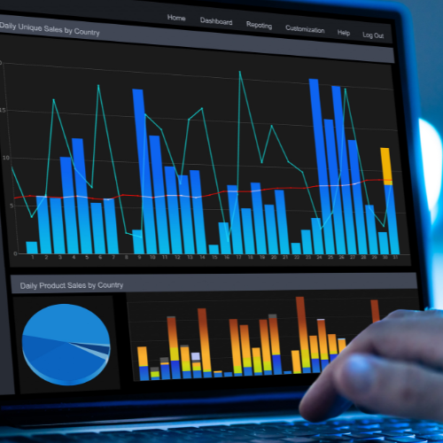

Portfólió
Referenciáink, történetünk és stackünk összegezve megtalálható a portfóliónkban.
Rólunk
Közel 10 éves, Data Science területen szerzett tapasztalat és több, mint 30 sikeres projekt után alapítottam meg a DSE-t.
Adattudomány, gépi tanulás, mesterséges intelligencia. Ezekkel telnek a mindennapjaink. Csapatunk tagjai közül többen PhD-vel rendelkeznek, míg néhányan a Kaggle-ön és az Upworkön a top 5%-ba tartoznak.
Ezen kívül együtt dolgozunk kutatókkal, matematikusokkal és szoftverfejlesztőkkel is.
Szolgáltatások
Kifinomult megoldásainkkal számos területet szolgálunk. Többek között - de nem csak ezekre korlátozva - az alábbiakat:
Stratégia
AI (mesterséges intelligencia) stratégia kidolgozása és annak megvalósítása
End-to-End
Komplett mesterséges intelligenciával kapcsolatos projektek lemendzselése valamint lefejlesztése A-tól Z-ig
AI Tanácsadás
Ha kérdés számodra, hogy az AI alkalmazható-e nálatok, vagy konkrét kérdésed van
Gépi látás
Kép-videó alapú egyedi AI fejlesztés
Szöveg
Szöveganalitika, szövegbányászat, Generative AI - LLM-ek, ChatGPT és open source modellek finomhangolása
Idősorok
Idősor (tőzsdei, egészségügyi, ipari, marketing, stb.) adatok elemzése, predikciója
Ajánlórendszerek
Felhasználói és termékprofilok építése tanuló algoritmusok segítségével
Támogatás
Adatvezérelt stratégia támogatása és fejlesztése
Munkamódszerünk
1
Titoktartási és versenytilalmi megállapodás aláírása
2
Üzleti igények megismerése, megértése
3
Adatok megismerése, megértése
4
Szerződéskötés
5
Adat tisztítása
6
Adat előkészítése a kiválasztott modell(ek)hez
7
Modell felparaméterezése, betanítása
8
Eredmények kiértékelése, optimalizáció, demózás
9
Deployment és dokumentáció készítése
Stack
Stabil fejlesztői skillset
Python
R
Matlab
SQL
Java
C#
TypeScript
Ruby
JavaScript
HTML,PHP
Product & Client Support Team
Project manager
Accountants
IT infrastucture
Software Tester
Data Analysing
Marketing managers
Gyakran használt Data Science Frameworks, Platforms, Tools
Leggyakrabban megrendelt szolgáltatások
Partnereink
A világ számos területéről és iparágaiból ismertünk meg partnereket. Amellett, hogy mindig nyitottak vagyunk újdonságok megtapasztalására, elmondható, hogy számos területen nagy tapasztalattal rendelkezünk.
Projektjeink
Tüdőrák diagnosztika mesterséges intelligencia segítségével
Tüdőrák detektálása radiológiai felvételeken. Együttműködés kutató orvosokkal és kórházakkal. Kulcsszavak: tüdőrák szegmentálás, rákdiagnosztika, radiológia, computer vision
Okos épület projekt gépi tanuló algoritmussal
Manapság már léteznek olyan jól felszerelt épületek, ahol számos különböző adat mentésre kerül. Gépi tanuló algoritmussal mintázatokat kerestünk a felhasználói tevékenységekben és növeltük az energiahatékonyságot. Kulcsszavak: smart building, gépi tanulás, time series forecasting, gRPC, docker
Gyűlöletbeszéd detektálása az interneten

Az online gyűlöletbeszéd rendkívül veszélyes, ugyanis a gyűlölet akár tettlegességig is fajulhat bizonyos esetekben, máskor viszont komoly pszichés deformációkat okozhat a gyűlöletbeszédet elszenvedőkben. Létrehoztunk egy olyan mesterséges intelligencia alapú algoritmust, amely képes magyar szövegekben azonosítani a gyűlöletbeszédet, származzon az a szöveg akár social media platformokról, hírekből vagy blogokról. Kulcsszavak: online gyűlöletbeszéd detektálás, gépi tanulás, neurális háló, NLP (Natural Language Processing)
Ügyfelek lemorzsolódását előrejelző algoritmus
Egy felhasználót megszerezni sok pénzbe kerül, ezért nagyon fontos a megtartásuk. Ha időben tudja a cég, hogy kik azok, akik várhatóan le fognak morzsolódni, akkor ezeket a felhasználókat még időben meg tudják keresni és a számukra megfelelő lehetőséget ajánlani. Nem csupán egy priorizált lista a cél ebben az esetben, hanem annak megmutatása, hogy milyen tényezők játszanak szerepet a lemorzsolódásban, valamint azt, hogy mikor szükséges beavatkozni a folyamatba. Kulcsszavak: Marketing, churn, gépi tanulás, adatvizualizáció
Szélerőmű meghibásodás előrejelzés

Szenzorok adataiból szélerőműveknek előrejeleztük és osztályoztuk a várható meghibásodását. Kulcsszavak: Ipar, szélerőmű, neurális háló, hyperparameter tuning Kulcsszavak: NLP (Natural Language Procesing), gépi tanulás, neurális hálók, ajánlórendszerek, REST API
Ajánlórendszer fejlesztése HR tevékenységhez

Szabadúszók számára algoritmusunk képes kiválasztani a számukra legvonzóbb, legrelevánsabb projekteket. Emellett a projektek kiírói számára megmutatjuk a számukra legmegfelelőbb szabadúszó, vállalkozó szakembert. Kulcsszavak: NLP (Natural Language Procesing), gépi tanulás, neurális hálók, ajánlórendszerek, REST API Kulcsszavak: dinamikus árazás, gépi tanulás
Dinamikus árképzés

Ügyfelünknek olyan előfizetési modellje van, amelyben a felhasználók maguk rakhatják össze csomagjaikat preferenciáik szerint. Ezen csomagok árai a felhasználó várható üzleti hasznával arányosan kerülnek kikalkulálásra mesterséges intelligencia segítségével. Kulcsszavak: dinamikus árazás, gépi tanulás Kulcsszavak: marketing, gépi tanulás
Ki fog várhatóan előfizetni

Érdemes figyelembe vennie a marketingnek, hogy az adott látogatók mit tudnak már a cégről, hányadszor járnak az oldalon, milyen korább tevékenységeik voltak. Ha ezek a fenti információk rendelkezésre állnak, már célirányos marketinget lehet folytatni és lehet a konverziót javítani. Egyik korábbi munkánkban a fentebbi kérdésekre kerestük és találtuk meg a válaszokat. Kulcsszavak: marketing, gépi tanulás
Ügyfélajánló rendszer

Bármilyen is a gazdasági helyzet, minden profitorientált vállalat ügyfeleket szeretne. Saját termékünk ügyfeleinknek ajánl új vásárlókat B2B (business to business) szektorban. Kulcsszavak: NLP (Natural Language Processing), gépi tanulás Kulcsszavak: machine learning, adatvizualizáció
Használtautó adatbázis tisztítása gépi tanuló algoritmussal

A használtautó kereskedők gyakran helytelen adatokat visznek fel egy-egy autóhoz az adatbázisban, például az autó típusa, hengerűrtartalma, ajtók száma. Ezeket a bejegyzéseket kézzel évekig tartana javítani emberi erőforrással. A hibás adatok detektálása és javítása mellett adatvizualizációval megmutattuk azt is, hogy a különböző hibák milyen esetekben és milyen gyakorisággal fordulnak elő. Kulcsszavak: machine learning, adatvizualizáció
Pályázatbeadást megkönnyítő félautomata rendszer fejlesztés

A pályázatoknál különböző dokumentumokat kell benyújtani a sikeres pályázáshoz. Algoritmusunk képes megkönnyíteni a pályázatírók munkáját, ugyanis kigyűjtjük számukra gépi tanuló algoritmusok segítségével a kitöltendő dokumentumok listáját akár scannelt pdf-ekből is. Emellett akár egyedi dokumentum sablonokat is képes azonosítani és bizonyos elemeit automatikusan kitölteni a pályázó adataival. Nem csupán tanuló rendszer fejlesztése volt a feladatunk, hanem egy webes felület elkészítése is. Kulcsszavak: NLP (Natural Language Processing), gépi tanulás, neurális hálók, REST API, webfejlesztés, UI Kulcsszavak: machine learning, adatvizualizáció
Ügyfélszolgálatosok munkájának megkönnyítése

Algoritmusaink segítségével az ügyfélszolgálatosok munkáját olyannyira meg tudtuk gyorsítani, hogy kétszer gyorsabban végzik és nagyobb pontosággal a munkájukat a gépi ajánlásoknak köszönhetően. Kulcsszavak: NLP (Natural Language Procesing), gépi tanulás, neurális hálók, RESTAPI Kulcsszavak: NLP (Natural Language Processing), gépi tanulás, neurális hálók, REST API, webfejlesztés, UI
Csalásdetektálás

Ügyfelünknél problémát okozott, hogy az alkalmazottak visszaéltek a helyzetek adta lehetőséggel és titokban nem valós fogyasztási adatokat írtak az adminisztrációba, ezzel megkárosítva a céget. Utóbbi tevékenységeket jeleztük elő gépi tanuló algoritmussal. Kulcsszavak: idősor előrejelzés, csalásdetektálás, neurális hálók Kulcsszavak: machine learning, adatvizualizáció
Tőzsdei árfolyammozgás előrejelző rendszer
10 éve foglalkozunk ezzel a területtel, sok évig hobby csapatban fejlesztettünk automata tőzsdei robotokat. Kulcsszavak: tőzsde, idősor előrejelzés, gépi tanulás, neurális hálózatok, stock, crypto
Streamelt videókból a legjobb jelenetek felismerése
Ügyfelünknek játékfejlesztő cége van, a felhasználói Youtube-on szoktak streamelni, miközben játszanak. Ezek általában 4-5 órás videók. A feladatunk az volt, hogy találjuk meg a videó kommentjei alapján azokat a jeleneteket, amelyek a legjobbak voltak a videóban azért, hogy azokból egy 2-3 perces videót tudjon összevágni ügyfelünk. Kulcsszavak: videó, stream, youtube, komment
Cikk ajánlórendszer
A felhasználók számára cikkek ajánlása annak alapján, amiket a felhasználó már megnyitott, elolvasott, esetleg értékelt. Kulcsszavak: Ajánlórendszer, gépi tanulás
Ajánlások
“Gerzson was great! from understanding our needs and execution to reporting. Highly recommended.” Fordítás: "Gerzson remek volt! Megértette, amire szükségünk volt, kiváló a megvalósítástól a riportálásig. Nagyon ajánlom!"
Jeremy Brooks - CEO of Hideaway Report
“Gerzsonnal két projektben is együtt dolgoztam. Az első projektben a tesztautomatizálás és az automatikus méréskiértékelés volt a feladata. Mély kompetenciákkal rendelkezett a Matlab szoftver használatában és segítségével a projekt stabil előrelépést tudott realizálni ezen a téren. Új ötleteket és fejlesztéseket hozott a témába, amivel a tesztlefedettség növekedését értük el. Munkája, tervei letisztultak voltak. Precíz munkavégzése példaértékű volt. Kommunikációja világos és lényegretörő. Szakmai kompetenciáit folyamatosan fejlesztette és fejleszti a mai napig is, amit egy innovációs projektben is kamatoztatott a cégünknél. A machine learning megoldásai, algoritmus tervezései olyan alapokat adtak a projektnek, hogy az a mai napig sikerrel működik. A korábban letett tervei nagyon stabil alapot adnak a folytatásra. Látszott, hogy ez a terület nagyon motiválja őt és szeret ezzel foglalkozni akár szabadidejében is. Ezen a területen megszerzett ismeretei szakmai elismertséget is hoztak neki. Több pozitív ügyfélvisszacsatolást kapott ezen projekt kapcsán. Szakmailag és emberileg is nagyra értékelem.”
Görög Róbert evosoft Hungary Kft. | Projektfelelős, Team manager
“This is the first time that I have worked with Gerzson but I was so impressed with his expertise and great overall service. He communicated often with me and I am extremely satisfied with the end outcome.” Fordítás: „Ez az első alkalom, hogy Gerzsonnal dolgozom, de nagyon lenyűgözött a szakértelme és a nagyszerű szolgáltatása. Gyakran kommunikált velem, és rendkívül elégedett vagyok a végeredménnyel.”
Christopher A. Williams - Co-founder at Boardman & Williams GbR
“Gerzson did an awesome job. We’ve had several other freelancers do similar work, but the work Gerzson did was the best. I hope to work with Gerzson again on future projects and would have no hesitation to do so.” Fordítás: „Gerzson nagyszerű munkát végzett. Több szabadúszó is végezett már hasonló munkát, de Gerzson munkája volt a legjobb. Remélem, hogy a jövőbeli projekteken újra együtt dolgozhatok Gerzsonnal."
Nathan Black - Chief Data Scientist at QuantHub
“Gerzson is a highly-talented and responsible guy with very good communication skills. I enjoyed working with him!” Fordítás: „Gerzson egy rendkívül tehetséges és felelősségteljes srác, nagyon jó kommunikációs készségekkel. Élveztem vele a munkát!”
German Engineer
A következő sikeres projekt a tiéd!
Névjegykártya